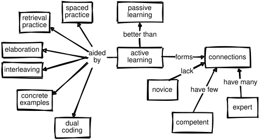

5 Individual Learning
Previous chapters have explored what teachers can do to help learners. This chapter looks at what learners can do for themselves by changing their study strategies and getting enough rest.
The most effective strategy is to switch from passive learning to active learning (National Academies of Sciences, Engineering, and Medicine 2018), which significantly improves performance and reduces failure rates (Freeman et al. 2014):
| Passive | Active |
|---|---|
| Read about something | Do exercises |
| Watch a video | Discuss a topic |
| Attend a lecture | Try to explain it |
Referring back to our simplified model of cognitive architecture (Figure 4.1), active learning is more effective because it keeps new information in short-term memory longer, which increases the odds that it will be encoded successfully and stored in long-term memory. And by using new information as it arrives, learners build or strengthen ties between that information and what they already know, which in turn increases the chances that they will be able to retrieve it later.
The other key to getting more out of learning is metacognition, or thinking about one’s own thinking. Just as good musicians listen to their own playing and good teachers reflect on their teaching (Chapter 8), learners will learn better and faster if they make plans, set goals, and monitor their progress. It’s difficult for learners to master these skills in the abstract—just telling them to make plans doesn’t have any effect—but lessons can be designed to encourage good study practices, and drawing attention to these practices in class helps learners realize that learning is a skill they can improve like any other Miyatsu et al. (2018).
The big prize is transfer of learning, which occurs when one thing we have learned helps us learn other things more quickly. Researchers distinguish between near transfer, which occurs between similar or related areas like fractions and decimals in mathematics, and far transfer, which occurs between dissimilar domains—for example, the idea that learning to play chess will help mathematical reasoning or vice versa.
Near transfer undoubtedly occurs—no kind of learning beyond simple memorization could occur if it didn’t—and teachers leverage it all the time by giving learners exercises that are similar to material that has just been presented in a lesson. However, (Sala and Gobet 2017) analyzed many studies of far transfer and concluded that:
…the results show small to moderate effects. However, the effect sizes are inversely related to the quality of the experimental design… We conclude that far transfer of learning rarely occurs.
When far transfer does occur, it seems to happen only once a subject has been mastered (Gick and Holyoak 1987). In practice, this means that learning to program won’t help you play chess and vice versa.
5.1 Six Strategies
Psychologists study learning in a wide variety of ways, but have reached similar conclusions about what actually works (Markovits and Weinstein 2018). The Learning Scientists have catalogued six of these strategies and summarized them in a set of downloadable posters. Teaching these strategies to learners, and mentioning them by name when you use them in class, can help them learn how to learn faster and better Weinstein, Sumeracki, et al. (2018).
Spaced Practice
Ten hours of study spread out over five days is more effective than two five-hour days, and far better than one ten-hour day. You should therefore create a study schedule that spreads study activities over time: block off at least half an hour to study each topic each day rather than trying to cram everything in the night before an exam (Kang 2016).
You should also review material after each class, but not immediately after—take at least a half-hour break. When reviewing, be sure to include at least a little bit of older material: for example, spend twenty minutes looking over notes from that day’s class and then five minutes each looking over material from the previous day and from a week before. Doing this also helps you catch any gaps or mistakes in previous sets of notes while there’s still time to correct them or ask questions: it’s painful to realize the night before the exam that you have no idea why you underlined “Demodulate!!” three times.
When reviewing, make notes about things that you had forgotten: for example, make a flash card for each fact that you couldn’t remember or that you remembered incorrectly (Matthes 2019). This will help you focus the next round of study on things that most need attention.
According to (Miller 2016), “The lectures that predominate in face-to-face courses are relatively ineffective ways to teach, but they probably contribute to spacing material over time, because they unfold in a set schedule over time. In contrast, depending on how the courses are set up, online students can sometimes avoid exposure to material altogether until an assignment is nigh.”
Retrieval Practice
The limiting factor for long-term memory is not retention (what is stored) but recall (what can be accessed). Recall of specific information improves with practice, so outcomes in real situations can be improved by taking practice tests or summarizing the details of a topic from memory and then checking what was and wasn’t remembered. For example, (Karpicke and Roediger 2008) found that repeated testing improved recall of word lists from 35% to 80%.
Recall is better when practice uses activities similar to those used in testing. For example, writing personal journal entries helps with multiple-choice quizzes, but less than doing practice quizzes (Miller 2016). This phenomenon is called transfer-appropriate processing.
One way to exercise retrieval skills is to solve problems twice. The first time, do it entirely from memory without notes or discussion with peers. After grading your own work against a rubric supplied by the teacher, solve the problem again using whatever resources you want. The difference between the two shows you how well you were able to retrieve and apply knowledge.
Another method (mentioned above) is to create flash cards. Physical cards have a question or other prompt on one side and the answer on the other, and many flash card apps are available for phones. If you are studying as part of a group, swapping flash cards with a partner helps you discover important ideas that you may have missed or misunderstood.
Read-cover-retrieve is a quick alternative to flash cards. As you read something, cover up key terms or sections with small sticky notes. When you are done, go through it a second time and see how well you can guess what’s under each of those stickies. Whatever method you use, don’t just practice recalling facts and definitions: make sure you also check your understanding of big ideas and the connections between them. Sketching a concept map and then comparing it to your notes or to a previously-drawn concept map is a quick way to do this.
One powerful finding in learning research is the hypercorrection effect (Metcalfe 2016). Most people don’t like to be told they’re wrong, so it would be reasonable to assume that the more confident someone is in the answer they’ve given on a test, the harder it is to change their mind if they were actually wrong. It turns out that the opposite is true: the more confident someone is that they were right, the more likely they are not to repeat the error if they are corrected.
Interleaving
One way you can space your practice is to interleave study of different topics: instead of mastering one subject, then a second and third, shuffle study sessions. Even better, switch up the order: A-B-C-B-A-C is better than A-B-C-A-B-C, which in turn is better than A-A-B-B-C-C (Rohrer et al. 2015). This works because interleaving fosters creation of more links between different topics, which in turn improves recall.
How long you should spend on each item depends on the subject and how well you know it. Somewhere between 10 and 30 minutes is long enough for you to get into a state of flow (Section 5.2) but not for your mind to wander. Interleaving study will initially feel harder than focusing on one topic at a time, but that’s a sign that it’s working. If you are using flash cards or practice tests to gauge your progress, you should see improvement after only a couple of days.
Elaboration
Explaining things to yourself as you go through them helps you understand and remember them. One way to do this is to follow up each answer on a practice quiz with an explanation of why that answer is correct, or conversely with an explanation of why some other plausible answer isn’t. Another is to tell yourself how a new idea is similar to or different from one you have seen previously.
Talking to yourself may seem like an odd way to study, but (Bielaczyc et al. 1995) found that people trained in self-explanation outperformed those who hadn’t been trained. Similarly, (Chi et al. 1989) found that some learners simply halt when they hit a step they don’t understand when trying to solve problems. Others pause and generate an explanation of what’s going on, and the latter group learns faster. An exercise to build this skill is to go through an example program line by line with a class, having a different person explain each line in turn and say why it is there and what it accomplishes.
Concrete Examples
One particularly useful form of elaboration is the use of concrete examples. Whenever you have a statement of a general principle, try to provide one or more examples of its use, or conversely take each particular problem and list the general principles it embodies. (Rawson et al. 2014) found that interleaving examples and definitions like this made it more likely that learners would remember the latter correctly.
One structured way to do this is the ADEPT method: give an Analogy, draw a Diagram, present an Example, describe the idea in Plain language, and then give the Technical details. Again, if you are studying with a partner or in a group, you can swap and check work: see if you agree that other people’s examples actually embody the principle being discussed or which principles are used in an example that they haven’t listed.
Another useful technique is to teach by contrast, i.e. to show learners what a solution is not or what kind of problem a technique won’t solve. For example, when showing children how to simplify fractions, it’s important to give them a few like 5/7 that can’t be simplified so that they don’t become frustrated looking for answers that don’t exist.
Dual Coding
The last of the six core strategies that the Learning Scientists describe is to present words and images together. As discussed in Section 4.1, different subsystems in our brains handle and store linguistic and visual information, so if complementary information is presented through both channels, they can reinforce one another. However, learning is less effective when the same information is presented simultaneously in two different channels, because then the brain has to expend effort to check the channels against each other (Mayer and Moreno 2003).
One way to take advantage of dual coding is to draw or label timelines, maps, family trees, or whatever else seems appropriate to the material. (I am personally fond of pictures showing which functions call which others in a program.) Drawing a diagram without labels, then coming back later to label it, is excellent retrieval practice.
5.2 Time Management
I used to brag about the hours I was working. Not in so many words, of course—I had some social skills—but I would show up for class around noon, unshaven and yawning, and casually mention to whoever would listen that I’d been up working until 6:00 a.m.
Looking back, I can’t remember who I was trying to impress. What I remember instead is how much of the work I did in those all-nighters I threw away once I’d had some sleep, and how much damage the stuff I didn’t throw away did to my grades.
My mistake was to confuse “working” with “being productive.” You can’t produce software (or anything else) without doing some work, but you can easily do lots of work without producing anything of value. Convincing people of this can be hard, especially when they’re in their teens or twenties, but it pays tremendous dividends.
Scientific study of overwork and sleep deprivation goes back to at least the 1890s—see (Robinson 2005) for a short, readable summary. The most important results for learners are:
Working more than 8 hours a day for an extended period of time lowers your total productivity, not just your hourly productivity—i.e. you get less done in total (not just per hour) when you’re in crunch mode.
Working over 21 hours in a stretch increases the odds of you making a catastrophic error just as much as being legally drunk.
Productivity varies over the course of the workday, with the greatest productivity occurring in the first 4 to 6 hours. After enough hours, productivity approaches zero; eventually it becomes negative.
These facts have been reproduced and verified for over a century, and the data behind them is as solid as the data linking smoking to lung cancer. The problem is that people usually don’t notice their abilities declining. Like drunks who think they are still able to drive, people who are deprived of sleep don’t realize that they are not finishing their sentences (or thoughts). Five 8-hour days per week has been proven to maximize long-term total output in every industry that has ever been studied; studying or programming are no different.
But what about short bursts now and then, like pulling an all-nighter to meet a deadline? That has been studied too, and the results aren’t pleasant. Your ability to think drops by 25% for each 24 hours you’re awake. Put it another way, the average person’s IQ is only 75 after one all-nighter, which puts them in the bottom 5% of the population. If you do two all-nighters in a row your effective IQ is 50, which is the level at which people are usually judged incapable of independent living.
“But—but—I have so many assignments to do!” you say. “And they’re all due at once! I have to work extra hours to get them all done!” No: people have to prioritize and focus in order to be productive, and in order to do that, they have to be taught how. One widely-used technique is to make a list of things that need to be done, sort them by priority, and then switch off email and other interruptions for 30–60 minutes and complete one of those tasks. If any task on a to-do list is more than an hour long, break it down into smaller pieces and prioritize those separately.
The most important part of this is switching off interruptions. Despite what many people want to believe, human beings are not good at multi-tasking. What we can become good at is automaticity, which is the ability to do something routine in the background while doing something else (Miller 2016). Most of us can talk while chopping onions, or drink coffee while reading; with practice, we can also take notes while listening, but we can’t study effectively, program, or do other mentally challenging tasks while paying attention to something else—we only think we can.
The point of organizing and preparing is to get into the most productive mental state possible. Psychologists call it flow (Csikszentmihaly 2008); athletes call it “being in the zone,” and musicians talk about losing themselves in what they’re playing. Whatever name you use, people produce much more per unit of time in this state than normal. The bad news is that it takes roughly 10 minutes to get back into a state of flow after an interruption, no matter how short the interruption was. This means that if you are interrupted half a dozen times per hour, you are never at your productive peak.
In his 1961 short story “Harrison Bergeron,” Kurt Vonnegut described a future in which everyone is forced to be equal. Good-looking people have to wear masks, athletic people have to wear weights—and intelligent people are forced to carry around radios that interrupt their thoughts at random intervals. I sometimes wonder if—oh, hang on, my phone just—sorry, what were we talking about?
5.3 Peer Assessment
Asking people on a team to rate their peers is a common practice in industry. (Søndergaard and Mulder 2012) surveyed the literature on peer assessment, distinguishing between grading and reviewing. They found that peer assessment increased the amount, diversity, and timeliness of feedback, helped learners exercise higher-level thinking, encouraged reflective practice, and supported development of social skills. The concerns were predictable: validity and reliability, motivation and procrastination, trolls, collusion, and plagiarism.
However, the evidence shows that these concerns aren’t significant in most classes. For example, (Kaufman and Felder 2000) compared confidential peer ratings and grades on several axes for two undergraduate engineering courses and found that self-rating and peer ratings statistically agreed, that collusion wasn’t significant (i.e. people didn’t just give all their peers high grades), that learners didn’t inflate their self-ratings, and crucially, that ratings were not biased by gender or race.
One way to implement peer assessment is contributing student pedagogy, in which learners produce artifacts to contribute to others’ learning. This can be developing a short lesson and sharing it with the class, adding to a question bank, or writing up notes from a particular lecture for in-class publication. For example, (Frank-Bolton and Simha 2018) found that learners who made short videos to teach concepts to their peers had a significant increase in their own learning compared to those who only studied the material or viewed the videos. I have found that asking learners to share one bug and its fix with the class every day helps their analytic abilities and reduces impostor syndrome.
Another approach is calibrated peer review, in which a learner reviews one or more examples using a rubric and compares their evaluation against the teacher’s review of the same work (Kulkarni et al. 2013). Once learners’ evaluations are close enough to the teacher’s, they start evaluating their peers’ actual work. If several peers’ assessments are combined, this can be as accurate as assessment by teachers (Paré and Joordens 2008).
Like everything else, assessment is aided by rubrics. The evaluation form in Section F.2 shows a sample to get you started. To use it, rank yourself and each of your teammates, then calculate and compare scores. Large disparities usually indicate a need for a longer conversation.
5.4 Exercises
5.4.1 Learning Strategies (individual/20 min)
Which of the six learning strategies do you regularly use? Which ones do you not?
Write down three general concepts that you want your learners to master and give two specific examples of each (concrete examples practice). For each of those concepts, work backward from one of your examples to explain how the concept explains it (elaboration).
5.4.2 Connecting Ideas (pairs/5 min)
This exercise is an example of using elaboration to improve retention. Pick a partner have each person independently choose an idea, then announce your ideas and try to find a four-link chain that leads from one to the other. For example, if the two ideas are “Saskatchewan” and “statistics,” the links might be:
Saskatchewan is a province of Canada;
Canada is a country;
countries have governments;
governments use statistics to analyze public opinion.
5.4.3 Convergent Evolution (pairs/15 min)
One practice that wasn’t covered above is guided notes, which are notes prepared by the teacher that cue learners to respond to key information in a lecture or discussion. The cues can be blank spaces where learners add information, asterisks next to terms learners should define, and so on.
Create two to four guided note cards for a lesson you have recently taught or are going to teach. Swap cards with your partner: how easy is it to understand what is being asked for? How long would it take to fill in the prompts? How well does this work for programming examples?
5.4.4 Changing Minds (pairs/10 min)
(Kirschner and van Merriënboer 2013) argues that myths about digital natives, learning styles, and self-educators are all reflections of the mistaken belief that learners know what is best for them, and cautions that we may be in a downward spiral in which every attempt by education researchers to rebut these myths confirms their opponents’ belief that learning science is pseudo-science. Pick one thing you have learned about learning so far in this book that surprised you or contradicted something you previously believed and practice explaining it to a partner in 1–2 minutes. How convincing are you?
5.4.5 Flash Cards (individual/15 min)
Use sticky notes or anything else you have at hand to make up half a dozen flash cards for a topic you have recently taught or learned. Trade with a partner and see how long it takes each of you to achieve 100% perfect recall. Set the cards aside when you are done, then come back after half an hour and see what your recall rate is.
5.4.6 Using ADEPT (whole class/15 min)
Pick something you have recently taught or been taught and outline a short lesson that uses the five-step ADEPT method to introduce it.
5.4.7 The Cost of Multi-Tasking (pairs/10 min)
The Learning Scientists blog describes a simple experiment you can do with only a stopwatch to demonstrate the mental cost of multi-tasking. Working in pairs, measure how long it takes each person to do each of these three tasks:
- Count from 1 to 26 twice.
- Recite the alphabet from A to Z twice.
- Interleave the numbers and letters, i.e. say, “1, A, 2, B, …” and so on.
Have each pair report their numbers. Without specific practice, the third task always takes significantly longer than either of the component tasks.
5.4.8 Myths in Computing Education (whole class/20 min)
(Guzdial 2015) presents a list of the top ten mistaken beliefs about computing education, which includes:
The lack of women in Computer Science is just like all the other STEM fields.
To get more women in CS, we need more female CS faculty.
Student evaluations are the best way to evaluate teaching.
Good teachers personalize education for students’ learning styles.
A good CS teacher should model good software development practice because their job is to produce excellent software engineers.
Some people are just naturally better programmers than others.
Have everyone vote +1 (agree), -1 (disagree), or 0 (not sure) for each point, then read the full explanations in the original article and vote again. Which ones did people change their minds on? Which ones do they still believe are true, and why?
5.4.9 Calibrated Peer Review (pairs/20 min)
Create a 5–10 point rubric with entries like “good variable names,” “no redundant code,” and “properly-nested control flow” for grading the kind of programs you would like your learners to write.
Choose or create a small program that contains 3–4 violations of these entries.
Grade the program according to your rubric.
Have a partner grade the same program with the same rubric. What do they accept that you did not? What do they critique that you did not?
Review
